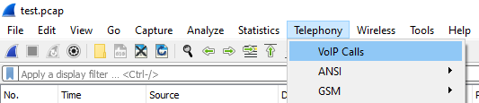
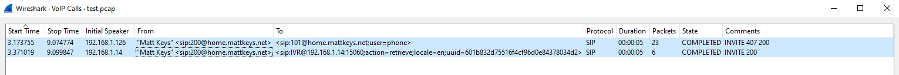
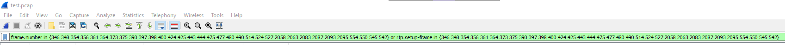
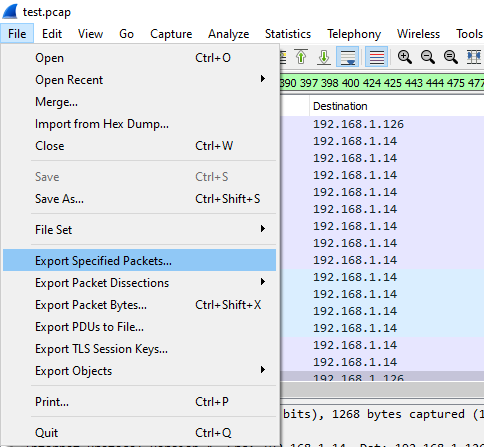
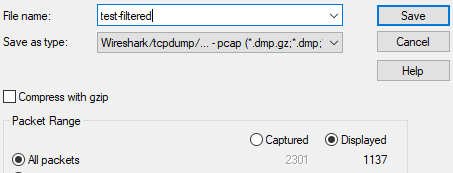
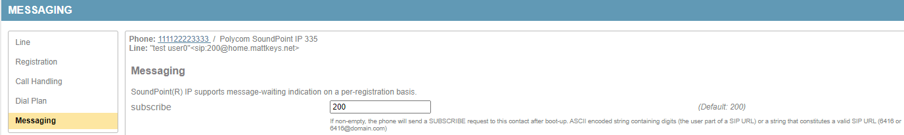
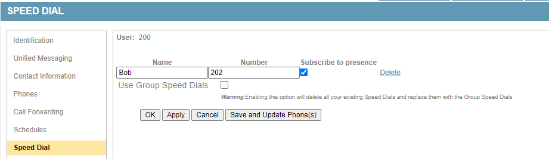
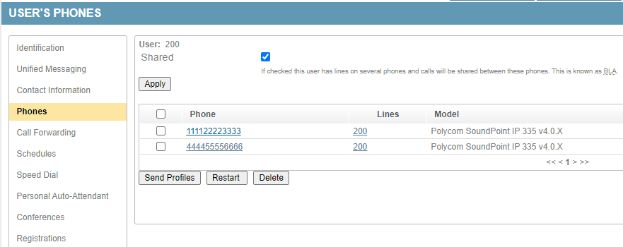

Troubleshooting¶
If you can’t reproduce the problem it probably isn’t worth troubleshooting it. Test multiple times, and from (or to) multiple locations.
For example, internal (extension to extension) calls only traverse the proxy/registrar and do not involve PSTN gateways. If a internal ext to ext call is working correctly, but a internal ext to external PSTN number is not working, the problem is likely the PSTN gateway rather than sipxcom.
Another example might be if the presence status is not updating for contacts on your phone, but other phones are fine. Rebooting the phone will force it to renew any line registrations and presence subscriptions. Try that first.
Narrow down where the problem may be by following a process of elimination.
Detailed Problem Description¶
Try to provide as much detail as possible. The more information the support team has to work with, the less likely they will have to ask for more information.
For example, instead of stating:
Bob, on extension 204, can’t transfer a call to Sally on extension 205.
Provide significantly more detail by stating something like:
Bob (extension 204) received a call from 555-321-1234 at approximately 10:30 AM EST, which he then answered. Bob attempted to perform a consultative transfer to Sally (extension 205) but was prompted on her handset, “Cannot Complete Transfer.”
Note how the time that the incident occurred and the transfer type are important. This helps the support team track down the issue.
Warning
There is a signaling difference between a blind transfer and a consultative/attended transfer. Blind transfer should work in every call scenario. Consultative transfer has limitations. For example, you cannot consultative transfer to a voicemail box or conference extension. We strongly recommend using blind transfer by default. Not all gateways can handle REFERs used in a consultative transfer, and PRACKs can cause audio issues. See the Example custom configuration files section for a custom config that sets blind transfer as default, or to disable phone response to PRACKs.
Note
“If no response” call forwards are similar to blind transfer. The call is not forked. “At the same time” call forwards are similar to consultative transfer. The call is forked. We strongly recommend using ‘if no response’ instead of ‘at the same time’. Again not all gateways can handle REFERs, and PRACKs can cause audio issues.
Snapshot Covering the Time of the Incident¶
The following steps will ensure a good quality snapshot for support team to work with.
- Turn up logging to INFO for the proxy service
- Reproduce the problem
- Take a snapshot as soon as possible after
See the Snapshot section.
Note
The snapshot archive(s) are saved locally beneath the primary (webui) server /var/sipxdata/tmp/.
Call Packet Capture¶
See Utility Services for automated packet capture. This is resource intensive, so it should only be enabled while troubleshooting. Another option is initiate the packet capture on the command line. Just before you begin to reproduce the issue, issue as root (on all servers running the proxy service):
tcpdump -s0 -n -i any -w ~/server1_example1.pcap
Notice the server name is in the filename so it can be easily distinguished. The CDR records may help you gather information, such as From:, To:, date/time of the call, or the Call-ID if you exported the CSV from CDRs.
Using Wireshark to view packet captures¶
First open the packet capture file in Wireshark, then navigate to Telephony - Voip Calls.
Calls within the packet capture are listed in the “Voip Calls” window. Hold down shift and click to highlight those you’re interested in.
After highlighting calls you are interested in, options will become available at the bottom of the Voip Calls window.

Prepare Filter will generate a filter in the main application window to display only SIP (and RTP packets if available) involved in the selected calls.
This can be used to create sanitized (smaller) exports. To export a sanitized pcap (after using Prepare filter), click File - Export Specified Packets.
Next provide the output filename. The “Displayed” option should be selected. This exports only packets displayed in the main application window (after filtering).
- Flow Sequence will display the SIP ladder of the selected calls. Clicking any part of the ladder will move your placement in the main application window to that particular packet number.
- Play Streams is useful to view or listen to audio RTP involved in the call.
Logs¶
The first step is to gather logs. All SIP signaling passes through the proxy service, but by default the log verbosity of the proxy service is set to NOTICE which does not display the SIP messages.
Note
Each server has its own set of logs beneath /var/log/sipxpbx/. The sipXproxy.log on server1 will be different than on server2 or server3.
In order to see SIP messages in the sipXproxy.log file(s), increase the verbosity to INFO (or DEBUG) beneath System - Services - SIP Proxy - Log Level, then apply at the bottom of the page.
Note
This will restart the proxy service which may interrupt calls.
This will also enable use of the sipcodes.sh script, which is now included in the sipxcom (19.04 and above) rpms. It counts SIP messages in the logs, so log verbostiy must be at INFO or DEBUG to count them.
Note
Upon snapshot creation the sipcodes script is ran against the entire proxy log file. You’ll always get the entire count (no matter what the log filter percentage was) in the snapshot as ./var/log/sipxpbx/sipcodes.log, given sipcodes had something to count (proxy log must be at INFO or DEBUG).
All sipxcom service logs are beneath /var/log/sipxpbx/. Other services such as apache2 (/var/log/httpd/), mongodb (/var/log/mongodb/), and postgresql (/var/lib/pgsql/data/pg_log/) logs are outside of that directory. A sipxcom snapshot is a handy way to grab everything that may be of use all at once.
Note
The logs are rotated every 24 hours. Rotated logs are renamed to be suffixed with the date, and may be compressed with gzip.
sipcodes.sh¶
The sipcodes script (/usr/bin/sipcodes.sh) was developed to provide quick counts from the /var/log/sipxpbx/sipXproxy.log, or /var/log/sipxpbx/sipxbridge.log. The log verbosity of these services must be set to INFO or DEBUG in order to see and count the SIP signaling within the log.
A basic understanding of SIP signaling is required to understand and act upon the output of the script. In summary:
A REGISTER is used to authenticate a SIP user. Within the REGISTER message, the From: header indicates the user attempting registration. The Contact: header provides the IP address of the phone or device sending the REGISTER. All registrations can be viewed beneath Diagnostics - Registrations, or for a single user in Users Tab - $user - Registrations.
A INVITE is used when a user places a call. The To: header is the number dialed, the From: header is the user that sent it, and again the Contact: usually contains the IP of the device sending the message. INVITEs create entries in the Call Detail Records.
A SUBSCRIBE is used when a SIP phone requests a feature on the server. Within the SUBSCRIBE message, the Event: header describes the service requested.
Event: message-summary is used with the Message Waiting Indicator (MWI) service. A phone that supports this feature may have a light that blinks upon voicemail deposit.
The MWI subscription of a Polycom phone is defined in the Users - $user - Phones - $phone - Lines - $line - Messaging tab.
Note
To remove the MWI subscription empty the ‘subscribe’ field, apply, then send profiles to the phone. Repeat for each phone assigned.
Event: dialog is used when the user is subscribed to the presence status of another user. These are defined in Users - $user - Speed Dials with the “Subscribe to presence” option checked.
Note
Speed dial entries without “Subscribe to presence” checked are saved in /var/sipxdata/configserver/phone/profile/tftproot/$mac-directory.xml. Speed dial entries with “Subscribe to presence” checked are stored in the SIPXCONFIG database.
Event: dialog;sla is used with the SAA/BLA service. This allows a single extension to be assigned to multiple phones. The line status is shared between phones using this method. If the line is shared the ‘Shared’ box will be checked beneath Users - $user - Phones.
As with INVITE and REGISTER, the Contact: header in a SUBSCRIBE is usually the IP of the device sending the message.
Warning
Only those three SUBSCRIBE Event: headers are supported. If you find other Event: headers such as Event: presence or Event: as-feature-event you can safely assume the device is not configured properly.
There are more such as OPTIONS and ACKs, but these are usually not as important.
The first section of the sipcodes output describes the time period covered in the log file provided. Note that both proxy and bridge timestamps are in UTC/GMT. This portion is simply gathering and filtering output from the top (head) two lines and the last (tail) two lines of the log.
The next section describes overall SIP message counts mentioned previously, including OPTIONS and ACKs.
The “additional information” of each provides the most useful troubleshooting information. The default output only displays the top 50 results. If you have thousands of users or if there are more than 50 users/devices spamming the proxy, you may need to increase this (edit the “head -n50” parts of the script) to get a higher level perspective.
Users with the lowest counts in each column are likely users with a single phone assignment and properly configured. Users with substantially higher counts than others should be suspected as misconfigured.
For example:
- A user who has configured a incorrect SIP password on a gateway/phone will have a much higher REGISTER count than others because the gateway/phone will continually send requests and fail. A successful REGISTER does not send another request until the registration counter is near expiration (expiration values are typically somewhere between 300 to 3600 seconds). The only legitimate reason for a high REGISTER count is multiple phone assignment, or the device is configured manually with a shorter registration interval than everyone else.
- A user with a much higher SUBSCRIBE Event: message-summary count may not have voicemail permission, or even exist anymore, but the phone is still configured to subscribe to MWI. If the user doesn’t exist or is disabled, you will probably see a high REGISTER count as well.
At the bottom of the output are some 400 and 500 series checks. A healthy output would be 0 on all of those. If devices are flooding the server it will fill the proxy message queue and prevent it from processing legitimate traffic. If you see a high count of 503 Service Unavailable responses this has happened (or is happening).
If you need to determine the IP address of a phone, the Contact: header may be used. The exception is if the device is behind a SBC (upper registered). For example, if there is a very high REGISTER count from user 200, who no longer exists in the system anymore but still assigned to a phone, you could manually filter the proxy log like:
grep "REGISTER sip" /var/log/sipxpbx/sipXproxy.log | grep "INCOMING" | grep "sip:200" | syslogviewer --no-pager | grep "Contact:" | awk -F ";" '{ print $1 }' | sort | uniq -c | sort -rn
DNS Checks¶
Use a desktop on the same network as your phones.
MS Windows¶
Use nslookup on the command line to check if DNS SRV records can be found.
C:\>nslookup
Default Server: UnKnown
Address: 192.168.1.14
> set type=SRV
> _sip._tcp.home.mattkeys.net
Server: UnKnown
Address: 192.168.1.14
_sip._tcp.home.mattkeys.net SRV service location:
priority = 30
weight = 10
port = 5060
svr hostname = sipx.home.mattkeys.net
home.mattkeys.net nameserver = sipx.home.mattkeys.net
sipx.home.mattkeys.net internet address = 192.168.1.14
>
Mac, Linux/Unix¶
Use dig on the command line to check if DNS SRV records can be found.
# dig -t SRV _sip._tcp.home.mattkeys.net @192.168.1.14
; <<>> DiG 9.11.5-P4-5.1+deb10u2-Debian <<>> -t SRV _sip._tcp.home.mattkeys.net @192.168.1.14
;; global options: +cmd
;; Got answer:
;; ->>HEADER<<- opcode: QUERY, status: NOERROR, id: 2639
;; flags: qr aa rd ra; QUERY: 1, ANSWER: 1, AUTHORITY: 1, ADDITIONAL: 2
;; OPT PSEUDOSECTION:
; EDNS: version: 0, flags:; udp: 4096
; COOKIE: c0d5be2f1899987c18baf1545f96f47f46f6565a81ddbad1 (good)
;; QUESTION SECTION:
;_sip._tcp.home.mattkeys.net. IN SRV
;; ANSWER SECTION:
_sip._tcp.home.mattkeys.net. 1800 IN SRV 30 10 5060 sipx.home.mattkeys.net.
;; AUTHORITY SECTION:
home.mattkeys.net. 1800 IN NS sipx.home.mattkeys.net.
;; ADDITIONAL SECTION:
sipx.home.mattkeys.net. 1800 IN A 192.168.1.14
;; Query time: 1 msec
;; SERVER: 192.168.1.14#53(192.168.1.14)
;; WHEN: Mon Oct 26 12:08:31 EDT 2020
;; MSG SIZE rcvd: 156
The Call-ID Header¶
The Call-ID header remains unique during any SIP message dialog. This allows you to use it as the search term in utilities such as grep to follow the dialog.
The easiest way to obtain the Call-ID of a call is probably using a CDR CSV export. The call ID is a column in the CSV output for each entry.
The other method is working with the proxy log data directly. SIP messages are only visible if the proxy log is at INFO or DEBUG verbosity. It is at NOTICE by default, which does not display the SIP messages.
The log verbosity setting is not retrospective. The setting must be at INFO or DEBUG prior to whatever it is you’re trying to troubleshoot.
Note
If you can’t reproduce the problem it probably isn’t worth troubleshooting it. Test multiple times. If it is intermittent, and you are running telephony services on multiple servers, that may indicate the problem is isolated to a particular server in the cluster (check DNS SRV and network path).
If the message dialog is a INVITE, and the call is forked such as with a ‘at the same time’ call forward, the end of the Call-ID will be suffixed with -0, -1, and so on for as many call forks there were. When using grep against the log, use the first half (that is everything prior to the @) of the Call-ID as your search string. This will ensure you get the entire dialog in the grep output, including any forks.
For example user 201 called user 200. A call is a INVITE, and the To: is “sip:200”. So we can show all Call-IDs To: 200 with the following:
# grep "INVITE sip:200" /var/log/sipxpbx/sipXproxy.log | syslogviewer --no-pager | grep "Call-ID:" | sort -u
Call-ID: a52e3e8fa0e281c4ab51822b2d14f829@0:0:0:0:0:0:0:0
Next use the Call-ID in the output to fetch the entire dialog and redirect output to a log file like:
# grep "a52e3e8fa0e281c4ab51822b2d14f829" /var/log/sipxpbx/sipXproxy.log | syslogviewer --no-pager > ~/a52e3e8fa0e281c4ab51822b2d14f829.log
Note
The syslogviewer utility is only available on systems with sipxcom rpms installed. It escapes all line returns (at each header) in the proxy log that would otherwise be considered one single line to tools like grep. In other words, syslogviewer makes reading the log human friendly. The –no-pager flag disables the pause at each page. This allows for redirection of the entire output to a small log file. As less is the default viewer, this allows for all the features of less. For example, use the / key to search and highlight occurrences of a search term.
# syslogviewer --help
Usage:
syslogviewer [-h | --help] [-i | --indent] [-f[nn]]
[of=output]
[input]
--help Print this help message.
--indent Indent messages and continued lines.
--no-pager Do not pipe the output through a pager, even if it is a tty.
-f[nn] Fold lines that are over nn (default 80) characters.
Implies --indent.
if=<file> input file name (deprecated - use file name directly).
of=<file> output file name (defaults to stdout)
input - input file name (defaults to stdin)
If stdout is a tty, pipes output through the program specified
by the PAGER environment variable (defaults to 'less').